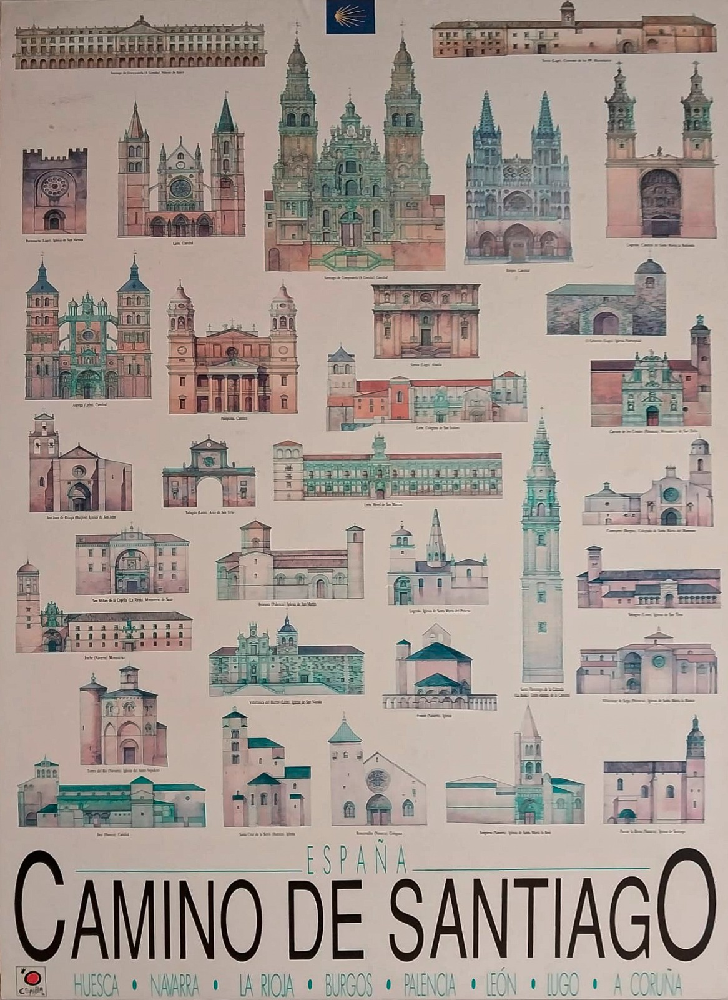

<
El camino de Santiago
Religious sites of El Camino de Santiago

- Cathedral of Santiago de Compostela
- San Juan de Ortega Monastery
- Santa María la Real de O Cebreiro
- Monastery of San Millán de la Cogolla
- Burgos Cathedral
- León Cathedral
- Church of San Martín de Frómista
- San Isidoro Basilica
- Church of Saint Nicholas of Portomarin
- Church of Santiago de Villafranca del Bierzo
- Cathedral of Leon
- Cathedral of Burgos
- Co-cathedral of Santa Maria de la Redonda
- Pamplona Cathedral
- San Marcos Monastery
- Church of St. Mary of Eunate
-
- Santo Domingo de la Calzada Cathedral
- San Millan de Yuso Monastery
- Church of the Holy Sepulchre, Navarra
- Arch of San Benito, Sahagun
- Cathedral of Palencia
- Santa Cruz Church, Elbete, Navarra
- Church of Santa Maria la Real of Sangüesa, Navarra
- Church of Santiago el Mayor, Puente La Reina, Navarra
- Monastery of Santa Maria la Real, Aguilar de Campoo, Palencia
- Monastery of Santa Maria la Real de Irache, Navarra